Evaluating Nanopore-based bacterial variant calling
Michael Hall
Data
- 14 bacterial species
- Campylobacter jejuni
- Campylobacter lari
- Escherichia coli
- Klebsiella pneumoniae
- Klebsiella variicola
- Listeria monocytogenes
- Listeria ivanovii
- Listeria welshimeri
- Mycobacterium tuberculosis
- Salmonella enterica
- Staphylococcus aureus
- Strepococcus pyogenes
- Strepococcus dysgalactiae
- Vibrio parahaemolyticus
- ONT R10.4.1 @ 5kHz sampling rate
- Simplex and duplex
- fast, hac, and sup
- Perfect assemblies
Read-level accuracy
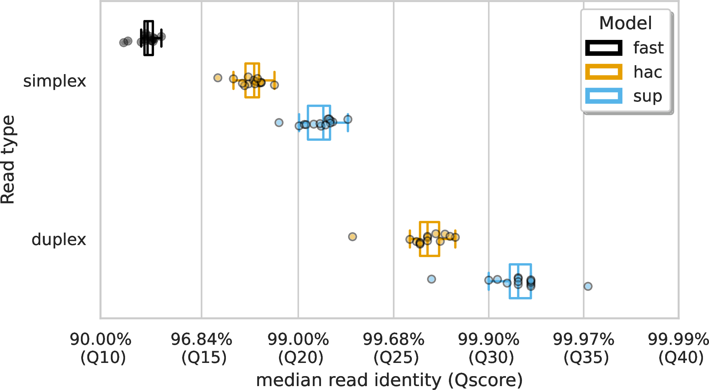Create variant truthset
- Select variant donor
- Find differences between reference and donor
- Apply differences to reference
https://github.com/mbhall88/NanoVarBench/blob/main/workflow/scripts/create_mutref.py
Select variant donor
Download genomes
github.com/pirovc/genome_updater
$ genome_updater.sh \
-d refseq \
-M ncbi \
-T 1773 \
-A "species:10000" \
-l "" \
[other opts]
Select variant donor
Filter on assembly statistics
$ datasets summary genome accession \
--inputfile genome_accessions.txt
$ datasets summary genome accession GCF_001200555.1 |
jq '.reports' | jq '.[0]' | jq '.checkm_info'
{
"checkm_marker_set": "Mycobacterium tuberculosis",
"checkm_marker_set_rank": "species",
"checkm_species_tax_id": 1773,
"checkm_version": "v1.2.2",
"completeness": 97.35,
"completeness_percentile": 45.988846,
"contamination": 1.38
}
Select variant donor
Filter on assembly statistics
- Completeness > 98% (96% for MTB and L. ivanovii)
- Completeness percentile > 2% (50% for MTB)
- Contamination < 5%
Select variant donor
Find closest ANI
github.com/bluenote-1577/skani
$ skani sketch -o sketchdir -t 8 -l fofn.txt
$ skani search -o ani.tsv -t 8 -d sketchdir -q ref.fna
skani search instead of skani dist for better memory usage. 6GB vs 95GB on GTDB.
Donor is genome closest to 99.5% ANI and 98.4<ANI<99.8
Find differences between reference and donor
minimap2
$ minimap2 -ax asm5/10 \
-c --cs \
--secondary=no ref.fna donor.fna |
sort -k6,6 -k8,8n |
paftools.js call -l50 -L50 -f ref.fna - |
bcftools sort -o mm2.vcf.gz --write-index -
asm5for average ANI 99.90,asm10for average ANI 99.0-c --csfor base-level alignment-l50min. aln len. for coverage and-L50min. aln. len. to call variants
Find differences between reference and donor
mummer4
$ nucmer --maxmatch --delta nucmer.delta ref.fna donor.fna
$ delta-filter -1 nucmer.delta > nucmer.1delta
$ show-snps -rlTHC nucmer.1delta > nucmer.snps
--maxmatchuse all matches regradless of uniqueness-Cdon't report SNPs from ambiguous mappings
Find differences between reference and donor
Merge minimap2 and mummer4
$ bcftools norm -f ref.fna -a -c e -m - mm2.vcf.gz |
bcftools norm -aD |
bcftools +remove-overlaps - |
bcftools +setGT - -- -t a -n c:1 | # make genotypes haploid ALT
bcftools filter -e 'abs(ILEN)>50' -o mm2.filter.vcf.gz
-aatomize complex variants-c eexit if REF allele wrong-m -split multiallelics-Dremove duplicates
Find differences between reference and donor
Merge minimap2 and mummer4
$ bcftools isec -c none -p outdir \
mm2.filter.vcf.gz nucmer.filter.vcf.gz
$ bcftools view -o apply.vcf.gz outdir/0002.vcf
-c noneonly records with identical REF and ALT alleles are compatible
Apply differences to reference
bcftools consensus
$ bcftools consensus -f ref.fna apply.vcf.gz > mutref.fna
Then invert the VCF to create the truthset
https://zenodo.org/doi/10.5281/zenodo.10867170
Variant calling
Assessing variant calls
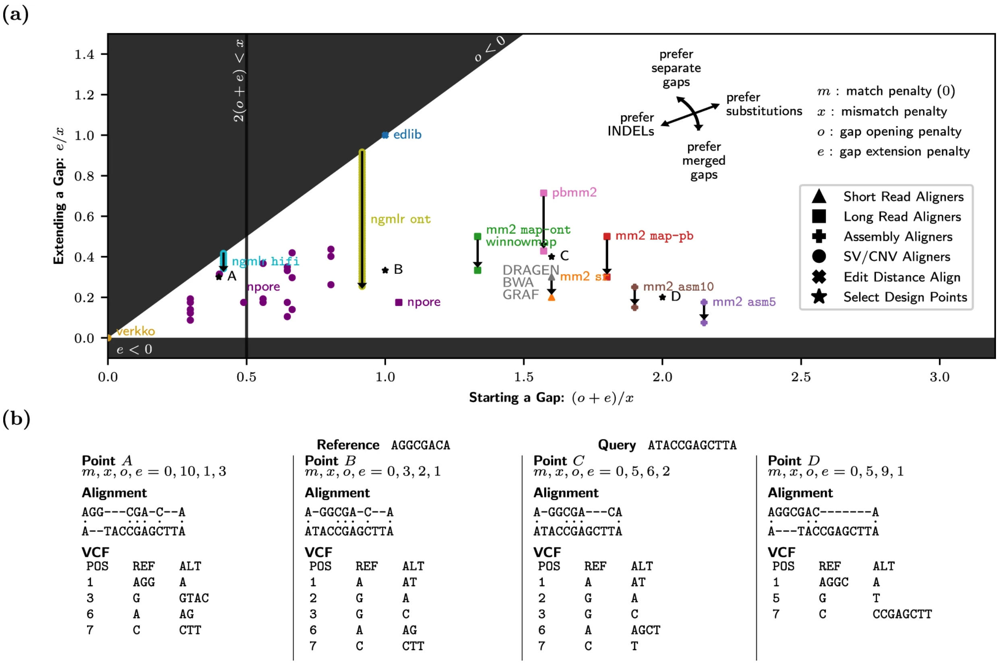Best F1 Score
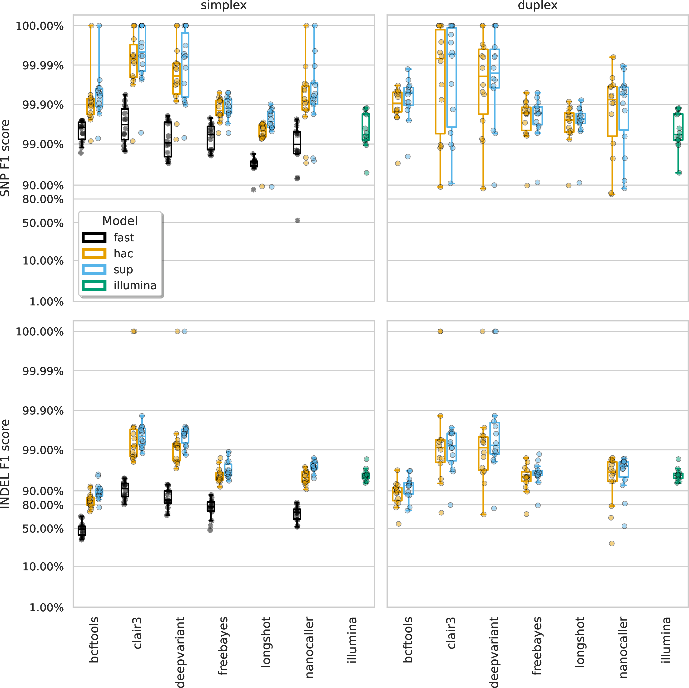Illumina missed calls
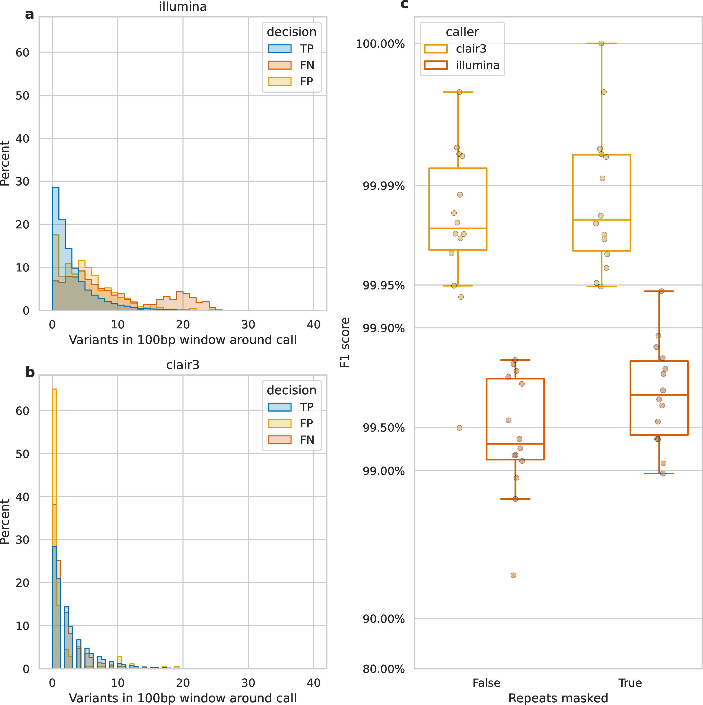Identifying repetitive regions
$ nucmer --maxmatch --nosimplify --delta nucmer.delta \
-l 20 ref.fna ref.fna
$ show-coords -rTH -I 60 nucmer.delta |
awk '{if ($1 != $3 && $2 != $4) print $0}' |
awk '{print $8"\t"$1"\t"$2}' |
sort -k1,1 -k2,2n |
bedtools merge -i - > repeats.bed
--nosimplifydon't simplify alignments by removing shadowed clusters-l 20min. length of single exact match-I 60min. percent identity
https://github.com/mbhall88/NanoVarBench/workflow/scripts/variant_density.py
Dense variation pileup
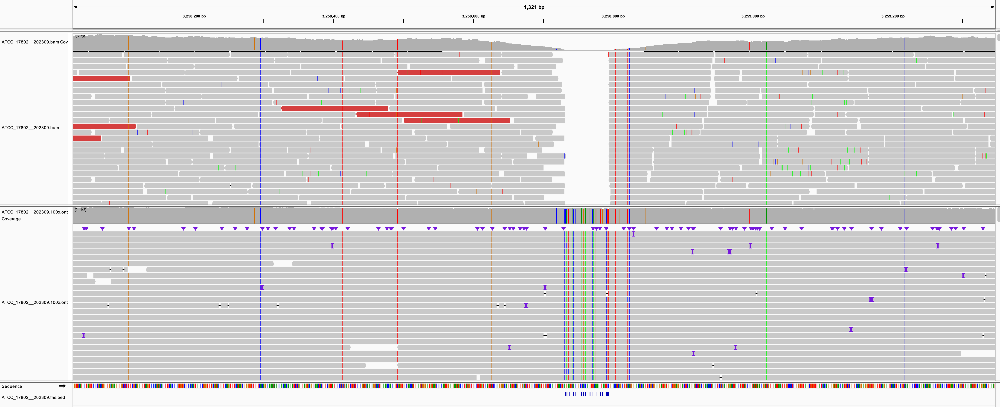Repetitive region pileup
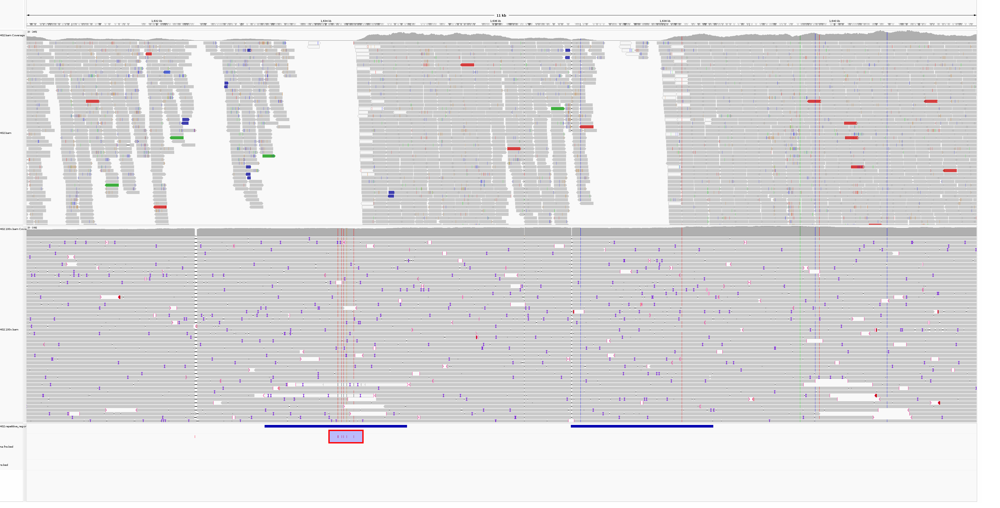ONT homopolymers
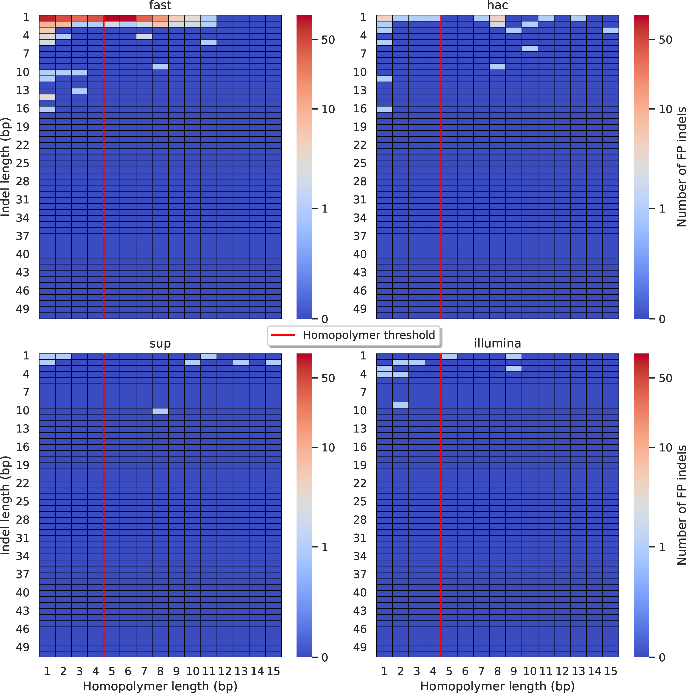https://github.com/mbhall88/NanoVarBench/workflow/scripts/annotate_homopolymers.py
How low can you go? (SNPs)
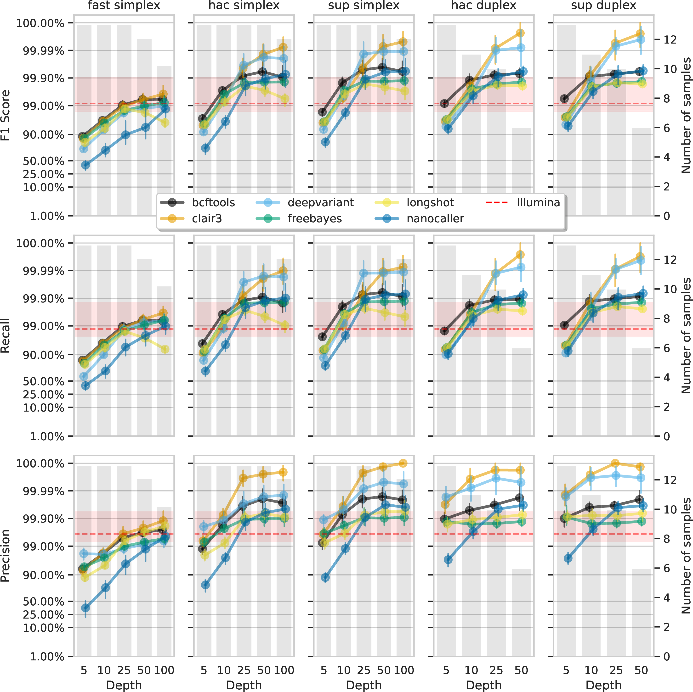How low can you go? (indels)
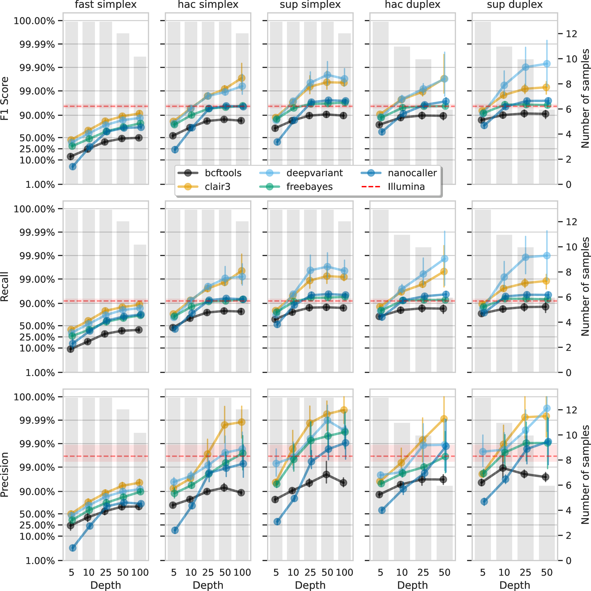Resource usage
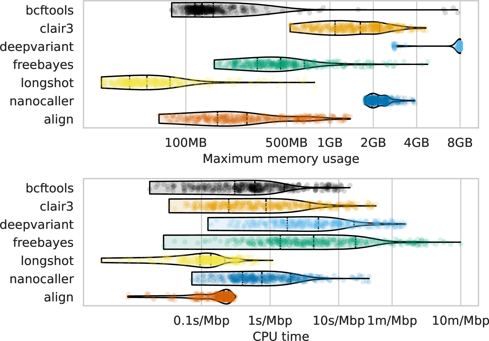Resource usage - basecalling
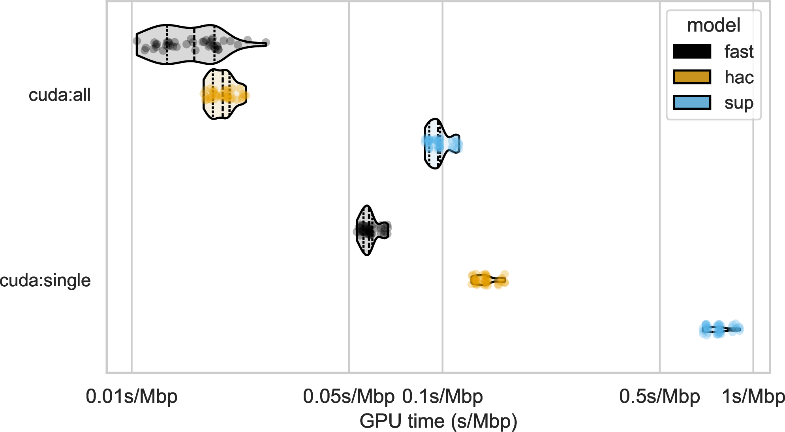Courtesy Eike
Conclusions
- Use sup model
- ONT read-level accuracy >Q20
- Use Clair3 - better than Illumina
- Homopolymer-induced errors not a major worry
- You can go surprisingly low with depth (10x if feeling brave, 25x otherwise)
Acknowledgements
- Ryan Wick
- Louise Judd
- An Nguyen
- Ouli Xie
- Mark Davies
- Eike Steinig
- Torsten Seemann
- Tim Stinear
- Lachlan Coin
Questions?